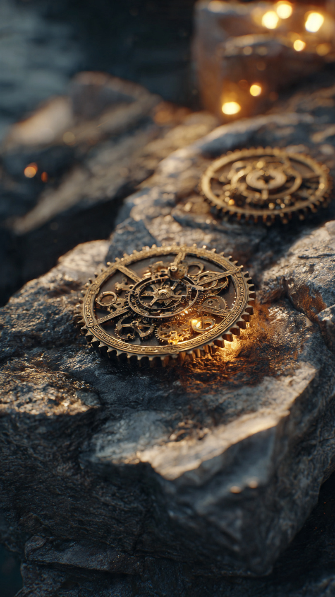
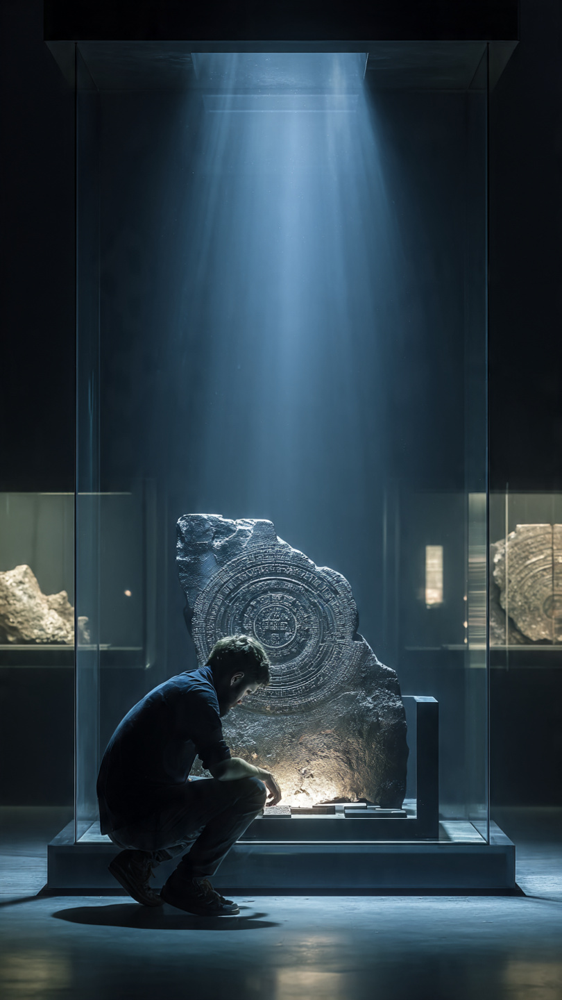

```html id="8h1qrs"
الجهاز الذي صنعه الإغريق قبل 2000 عام وأذهل العلماء | قصص تاريخية
```
في ربيع عام 1900، كان مجموعة من غواصي الإسفنج يبحثون عن رزقهم في مياه البحر المتوسط بالقرب من جزيرة يونانية صغيرة تُدعى أنتيكيثيرا.
لم يكن الغواصون يتوقعون أنهم على وشك اكتشاف واحد من أعظم الأسرار الأثرية في التاريخ.
فعندما نزل أحدهم إلى قاع البحر، وجد بقايا سفينة قديمة غرقت قبل أكثر من ألفي عام.
كانت السفينة محمّلة بالتماثيل البرونزية والرخامية، والأواني الفاخرة، والكنوز التي تعود إلى العصر الإغريقي.
لكن وسط كل تلك القطع، كان هناك جسم غريب لم يلفت الانتباه في البداية.
بدا الجسم وكأنه مجرد كتلة من البرونز المتآكل، مغطاة بالرواسب البحرية التي تراكمت عليها عبر القرون.
وعندما نُقلت القطع إلى المتحف الوطني في أثينا لتنظيفها، حدث أمر غير متوقع.
انشق أحد الأجزاء المتآكلة، وظهرت بداخله تروس معدنية صغيرة متشابكة بدقة مذهلة.
أصيب العلماء بالدهشة.
فوجود تروس معقدة بهذا الشكل في قطعة يعود تاريخها إلى أكثر من ألفي عام كان أمرًا لم يتوقعه أحد.
بدأ الخبراء يفحصون القطعة بعناية.
واكتشفوا أنها ليست آلة عادية، ولا جزءًا من سفينة.
بل جهاز ميكانيكي شديد التعقيد، يحتوي على عشرات التروس الدقيقة التي تعمل معًا بطريقة تشبه الساعات الحديثة.
وكان هذا الاكتشاف صادمًا.
ففي ذلك الوقت، كان الاعتقاد السائد أن البشر لم يصنعوا مثل هذه الآلات المعقدة إلا بعد أكثر من ألف عام.
لكن هذه القطعة الأثرية أثبتت أن الإغريق امتلكوا معرفة هندسية متقدمة للغاية.
ومع استمرار الدراسات، أصبح السؤال الأكبر:
ما وظيفة هذا الجهاز؟
ولماذا صُنعت كل هذه التروس الدقيقة؟
ظل العلماء لعقود طويلة يحاولون فك أسراره، إلى أن بدأت التقنيات الحديثة تكشف شيئًا مذهلًا...
سنكتشفه في الجزء الثاني.
📷 الصورة رقم 1

بعد سنوات طويلة من الدراسة، بقي الجهاز لغزًا حقيقيًا.
فقد كانت معظم أجزائه متآكلة بسبب بقائها في قاع البحر لأكثر من ألفي عام، ولم يكن من الممكن تفكيكه دون إتلافه.
ولهذا ظل العلماء لعقود يختلفون حول وظيفته الحقيقية.
لكن مع تطور التكنولوجيا في القرن الحادي والعشرين، استخدم الباحثون أجهزة التصوير بالأشعة السينية ثلاثية الأبعاد، وتقنيات تصوير متقدمة سمحت لهم بالنظر داخل الجهاز دون لمسه.
وكانت النتيجة مذهلة.
اكتشف العلماء أن الجهاز يحتوي على أكثر من ثلاثين ترسًا برونزيًا متشابكًا بدقة كبيرة.
وكانت هذه التروس تتحرك معًا بطريقة محسوبة للغاية.
كما ظهرت كتابات يونانية دقيقة على أجزاء من الجهاز، ساعدت الباحثين على فهم طريقة استخدامه.
وتبين أن الآلة لم تكن مخصصة للحرب أو الملاحة، بل كانت أداة علمية متقدمة.
وأظهرت الدراسات أن الجهاز كان يستطيع حساب مواقع الشمس والقمر، والتنبؤ بمراحل القمر، وتحديد مواعيد بعض الظواهر الفلكية، مثل الكسوف والخسوف، اعتمادًا على دورات فلكية معروفة لدى الإغريق.
ولهذا أطلق عليه كثير من الباحثين لقب:
"أول حاسوب ميكانيكي في التاريخ."
ورغم أن هذا الوصف حديث، فإنه يعبر عن مدى تعقيد الآلة مقارنة بعصرها.
أثار هذا الاكتشاف دهشة المؤرخين.
فقد أثبت أن الإغريق امتلكوا مستوى من الهندسة الميكانيكية لم يكن أحد يتوقعه.
كما دفع العلماء إلى إعادة النظر في تاريخ تطور التكنولوجيا، لأن مثل هذه الآلات الدقيقة لم تكن معروفة في أوروبا إلا بعد أكثر من ألف عام.
ومع ذلك...
ما زال هناك الكثير من الأسرار حول من صنع هذا الجهاز، وكيف اكتسب تلك المعرفة المذهلة.
وهذا ما سنعرفه في الجزء الأخير.
📷 الصورة رقم 2

حتى اليوم، لا يزال جهاز أنتيكيثيرا يُعد واحدًا من أكثر الاكتشافات الأثرية إدهاشًا في التاريخ.
ورغم أن العلماء تمكنوا من فهم جزء كبير من طريقة عمله، فإنهم لا يعرفون على وجه اليقين من هو الشخص الذي صممه أو الورشة التي صنعته.
ويرجح عدد من الباحثين أن الجهاز صُنع في القرن الثاني أو الأول قبل الميلاد، وربما كان مرتبطًا بالمدرسة العلمية التي ازدهرت في جزيرة رودس، حيث عاش عدد من أشهر علماء الفلك والرياضيات في العالم الإغريقي.
لكن لا يوجد دليل قاطع يؤكد ذلك.
وقد غيّر هذا الاكتشاف نظرة المؤرخين إلى الحضارات القديمة.
ففي السابق، كان الاعتقاد أن الآلات الميكانيكية المعقدة لم تظهر إلا في العصور الوسطى.
أما اليوم، فأصبح من الواضح أن الإغريق امتلكوا معرفة هندسية وفلكية متقدمة مكنتهم من تصميم جهاز يستطيع محاكاة حركة الأجرام السماوية باستخدام تروس دقيقة للغاية.
ولهذا يصفه كثير من العلماء بأنه سبق عصره بمئات السنين.
ولا يزال الجهاز محفوظًا في المتحف الأثري الوطني في أثينا، حيث يزوره آلاف الأشخاص كل عام.
كما يحاول الباحثون إعادة بناء نسخ حديثة منه لفهم جميع وظائفه، إذ يعتقد بعضهم أن الجهاز ربما كان يؤدي مهام أكثر مما اكتُشف حتى الآن.
ومع كل دراسة جديدة، تظهر تفاصيل إضافية تزيد من إعجاب العلماء بعبقرية صانعيه.
وتبقى آلية أنتيكيثيرا دليلًا على أن التاريخ لا يسير دائمًا في خط مستقيم.
فقد تصل حضارة إلى مستوى علمي مذهل، ثم تضيع كثير من معارفها مع مرور الزمن.
ولهذا لا يزال هذا الجهاز يذكّرنا بأن العالم القديم كان أكثر تقدمًا مما كنا نتصور، وأن بعض أعظم إنجازات البشر ظلت مدفونة تحت البحر لأكثر من ألفي عام قبل أن يكتشفها أحد.
⚙️📜 انتهت القصة 📜⚙️